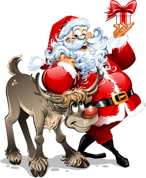

Jultomten eller tomten är han som delar ut julklappar under vintertiden och han är en tjock man som har ett stort långt vitt skägg. Han har även röda kläder på sig samt en luva som också är röd.
Rudolf är en ren med en röd mule. I den klassiska berättelsen så blir Rudolf mobbad av de andra renarna på grund av sin röda mule. En kväll när det är väldigt dimmigt ute så ber tomten Rudolf om hjälp för att lysa upp tomtens släde så den ska synas bättre i dimman. När han har hjälpt tomten så slutar det andra renarna att mobba honom.
